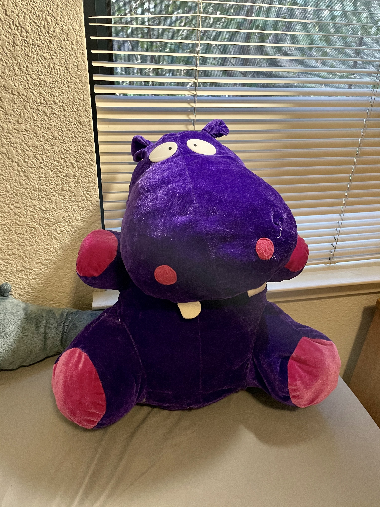

“Dr.Hiddleston was the last thing my grandma gave to me before she fell into dementia. He’s a carnival toy and very cheaply made. His seams come a part every now and then but I could never just leave him be. He’s been through most of my anxiety attacks, depressive episodes, and heartbreaks. That’s when I deemed him the title “dr.” Because he has a phD in comfort and hugs. He is my comfort person and I’m so glad I brought him with me through my last semester of college. Because it’s been rough.”{ 1 }
Taylor Belmonte
2014
